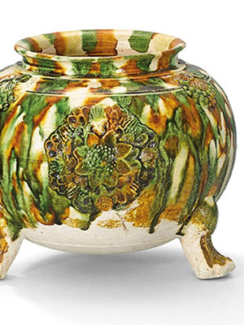

A sancai-glazed applique-decorated tripod jar. Tang dynasty (618-907). 5¼ in (13.3 cm) high
The Tang Dynasty (618-907) is famous for its energetically modeled and brightly colored tomb
figurines. Made from low-fired earthenware and intended exclusively for burial. Three northern kilns
were responsible for producing the majority of lead-glazed Sancai, or “three-colored” ware, that
furnished the tombs of the aristocracy for more than one hundred and fifty years of the Tang Dynasty.
Developed during the seventh century, the new colors were achieved simply by mixing metal
oxides to a lead fluxed glaze. The oxides included copper for green and iron for amber or brownish
yellow. The tendency of the glaze to run slightly accounts for the splashed effects and mingling of
the colors that give Sancai their exuberant effect. It is assumed that three-color ware was reserved
for burial ware and was seldom, if ever, used in daily life. (5)